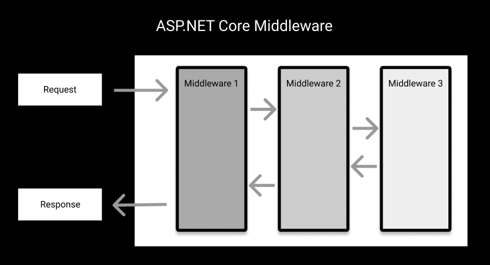
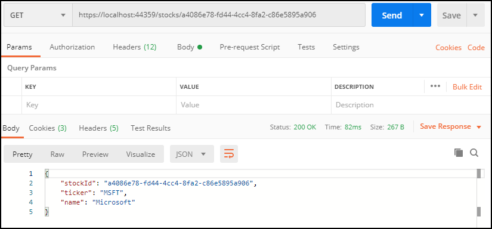
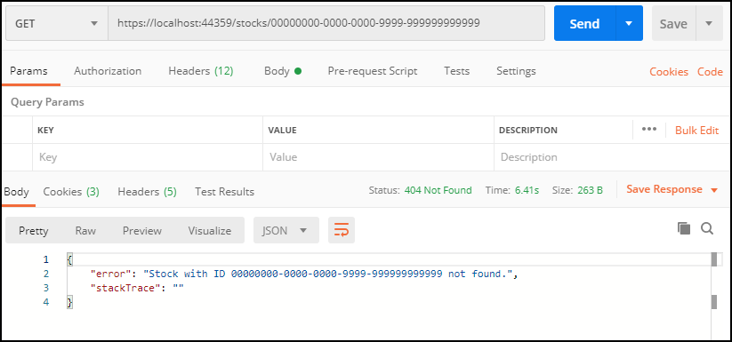
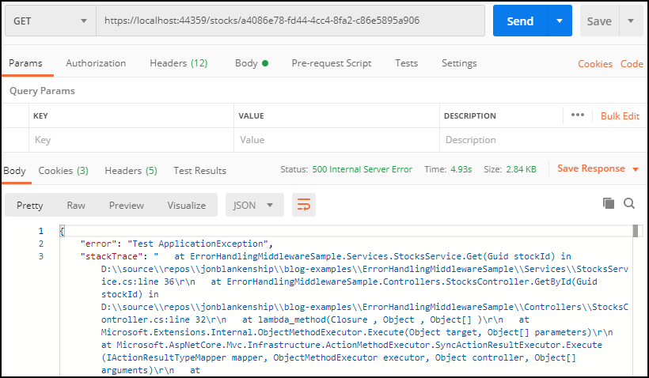

Global Exception Handling in ASP.NET Core Web API
A good web API is consistent and follows established patterns for communicating error states to the client, leveraging the appropriate HTTP status codes. To that end, a global exception handler can be very helpful in consolidating a service’s error handling logic in one place and translating errors into the appropriate responses to send back to the client. In this post I’ll show you how you can plug custom exception-handling logic into the ASP.NET Core request pipeline to handle any exceptions that are thrown in your API.

ASP.NET Core gives provides the ability to write middleware, which is logic inserted into the pipeline that the framework runs for every request that is received by the application. ASP.NET Core ships with core middleware components that enable things like rendering MVC pages, defining endpoint routes, and adding authentication support, and these things are configured in the application’s Startup class, where you can also add your own custom middleware components. This ability to easily configure and customize how ASP.NET Core processes requests is tremendously useful and powerful. The Microsoft documentation goes into more detail on how middleware works in ASP.NET Core, so I won’t spend too much more time on this.
For this post, we’ll be creating exception-handling middleware to catch and handle any exceptions that are thrown during the execution of a request to our service. This is something I implement in every API that I write, and it not only makes the handling of exceptions and the responses from my API consistent, but it also helps keep my codebase a bit cleaner.
The source code for the sample project demonstrating what we’ll be implementing here can be found on Github here.
Error-Handling Middleware
Let’s jump straight to the code. Here’s our ErrorHandlingMiddleware class:
public class ErrorHandlingMiddleware
{
private readonly RequestDelegate _next;
public ErrorHandlingMiddleware(RequestDelegate next)
{
_next = next;
}
public async Task Invoke(HttpContext context)
{
try
{
await _next(context);
}
catch (Exception ex)
{
await HandleExceptionAsync(context, ex);
}
}
private static Task HandleExceptionAsync(HttpContext context, Exception exception)
{
HttpStatusCode status;
string message;
var stackTrace = String.Empty;
var exceptionType = exception.GetType();
if (exceptionType == typeof(BadRequestException))
{
message = exception.Message;
status = HttpStatusCode.BadRequest;
}
else if (exceptionType == typeof(NotFoundException))
{
message = exception.Message;
status = HttpStatusCode.NotFound;
}
else
{
status = HttpStatusCode.InternalServerError;
message = exception.Message;
if (env.IsEnvironment("Development"))
stackTrace = exception.StackTrace;
}
var result = JsonSerializer.Serialize(new { error = message, stackTrace });
context.Response.ContentType = "application/json";
context.Response.StatusCode = (int)status;
return context.Response.WriteAsync(result);
}
}
In the Invoke(..) method of our middleware component, we wrap the invocation of our _next delegate in a try..catch. So any processing that happens further along in the pipeline will be included in this try..catch.
If there’s an exception, our HandleExceptionAsync(..) method handles it, where we have access to the HttpContext for the request, as well as the Exception that occurred. If you implement something similar, this is where you’ll likely modify the logic to meet your desired behavior according to your needs. Here I branch depending on the type of exception that was thrown.
Note that we’re setting the StatusCode property on the context.Response object depending on the type of exception that we’re handling. We’re also writing out the error message to the response body, as well as the the stack trace, in the case of an unhandled exception when running in the “Development” environment.
If I’m explicitly throwing an exception in my application, usually I’ll create my own custom exception type that inherits from Exception for the particular exceptional scenario. In this case, I’ve created BadRequestException and NotFoundException, which map nicely to HTTP response codes, but your situation may differ. Your exceptions may be more specific to your particular API.
Here’s my rather boring NotFoundException class:
public class NotFoundException : Exception
{
public NotFoundException(string message) : base(message)
{ }
}
Configuring the Middleware
To configure our API to use our new ErrorHandlingMiddleware, we call app.UseMiddleware(..), passing our middleware type in our Program class’s Configure(..) method:
public void Configure(IApplicationBuilder app, IWebHostEnvironment env)
{
if (env.IsDevelopment())
{
app.UseDeveloperExceptionPage();
}
// Hook in the global error-handling middleware
app.UseMiddleware(typeof(ErrorHandlingMiddleware));
// Register any middleware to report exceptions to a third-party service *after* our ErrorHandlingMiddleware
app.UseExcepticon();
// snip
}
Note that the order in which you register middleware in your application’s request pipeline matters. The various middleware components execute sequentially in the order in which they’re registered. In the case of a global exception handler like our ErrorHandlingMiddleware, we’ll register it early in the Configure(..) method so that it captures exceptions that occur in downstream middleware components.
Also note that if you’re using an exception tracking service that captures the exception for reporting but then re-throws it to allow it to be handled upstream, that middleware registration should happen after the registration of our ErrorHandlingMiddleware. In this sample I’m using Excepticon. (Full disclosure: I wrote Excepticon.) But using a third-party exception tracking service is absolutely not necessary for implementing global exception handling for you API like what I’m describing in this post.
When our ErrorHandlingMiddleware catches an exception, execution of the pipeline halts, it sets the appropriate settings on the response, and the API call immediately returns the response to the client.
Application Code
Handling exceptions globally in our middleware not only gives us a uniform way to handle unexpected exceptions that occur in our API, but it also allows us to eliminate some boilerplate code in our controllers, if desired.
In the sample project, there’s a StocksController that has a GetById(Guid stockId) method that calls a domain service to get a specific stock by ID. The controller method returns the requested stock to the caller:
[HttpGet]
[Route("{stockId}")]
public IActionResult GetById(Guid stockId)
{
var stock = _stocksService.GetStock(stockId);
return new OkObjectResult(stock);
}
This is a very barebones example and most real controller methods probably won’t be this thin. But note that we’re only worrying about the happy path here - what if the client sends us a stockId that we don’t have?
The GetStock(Guid stockId) method on the StocksService domain service considers a request for a stockId that doesn’t exist to be an exceptional case. That is, it shouldn’t happen, and if it does, the service immediately aborts, short-circuiting any further execution, and expects someone upstream to handle the exception. It throws a NotFoundException accordingly:
/// <summary>
/// Returns the <see cref="Stock"/> with the requested <see cref="stockId"/>
/// </summary>
/// <param name="stockId">The ID of the <see cref="Stock"/> to return</param>
/// <returns>The <see cref="Stock"/> with the requested <see cref="stockId"/></returns>
/// <exception cref="NotFoundException"></exception>
public Stock GetStock(Guid stockId)
{
var stock = Stocks.FirstOrDefault(s => s.StockId == stockId);
if (stock == null)
throw new NotFoundException($"Stock with ID {stockId} not found.");
return stock;
}
When this exception is thrown, the normal execution is interrupted and the catch block on our ErrorHandlingMiddleware takes over. We stop execution closer to where the exception occurs, and avoid branching logic in our controller to determine whether to return a 200- or a 400-series HTTP response code.
Note that the method documentation indicates the exception type(s) that this method might throw. This is helpful for consumers of IStockService to know what types of exceptions might be thrown when invoking the method.
A Note on this Example
Some developers will bristle at the idea of using an exception for the purpose in my example above, arguing that throwing is an expensive operation, and if you can anticipate an exceptional case, you should code for it. Don’t use exceptions for control flow.
While I understand and agree with the spirit of this objection, I tend to take a more pragmatic position.
This approach eliminates a fair amount of boilerplate if...else branching logic up the callstack until we get to the controller where we can handle it and return the appropriate HTTP response, especially if the callstack is deep or we invoke this method from multiple controller methods. For me, the benefit in terms of readability and maintainability is worth the cost of throwing the exception in this case, especially since this condition won’t normally happen. The likelihood of it happening is further reduced in cases where I control both the API and the client(s).
The ASP.NET Core middleware pattern gives us a clean and elegant way to interrupt execution and handle error conditions.
I wouldn’t take this approach on an API where I was trying to squeeze out very last drop of performance or an API running at massive scale. But it has served me well on the APIs that I’ve written.
Even if you don’t like my example and you choose not to throw exceptions for error conditions like the one above in your API code, implementing a global exception handling middleware component like I’ve described is still a good way to uniformly handle exceptions that you don’t anticipate.
Testing It Out
If we run the sample, we see that a call to the GET /stocks/{stockId} endpoint with a valid ID returns a 200 response with the stock data in the response body:

If we switch the stockId to an ID that doesn’t exist, we see that the API returns a 404 Not Found and the message we included with our exception is included in the message body:
Further, if we manually throw an ApplicationException in the StocksService.Get(Guid stockId) method, we get a 500 Internal Service response with the error and stackTrace included in the response body, since ApplicationException is not one of the exception types that we’re specifically handling in ErrorHandlingMiddleware:

Wrapping Up
In this post we’ve shown how to implement a global exception handler in an ASP.NET Core web API. By creating an ASP.NET Core middleware component, we’re able to catch and handle exceptions uniformly and ensure that the API is returning consistent and expected responses to its callers.
– Jon
I’m a developer and solo SaaS founder who likes to build things and share what I learn with others. If you’re interested software development, launching things, or random early morning thoughts, consider following me on Twitter or subscribe to my newsletter.
Thanks for reading!